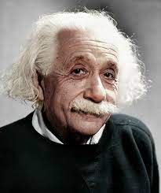

Albert Eisten

" should be made as simple as possible, but not simpler."
--Albert Einstein
- Albert Einstein was born at Ulm, in Wurttemberg, Germany, on March 14, 1879.
Six weeks later the family moved to Munich, where he later on began his schooling at the Luitpold Gymnasium.
Later, they moved to Italy and Albert continued his education at Aarau, Switzerland and in 1896 .
He entered the the the Swiss Federal Polytechnic School in Zurich to be trained as a teacher in physics and mathematics..
- During his stay at the Patent Office, and in his spare time, he produced much of his remarkable work and in 1908 he was appointed Privatdozent in Berne.
In 1909 he became Professor Extraordinary at Zurich, in 1911 Professor of Theoretical Physics at Prague,
returning to Zurich in the following year to fill a similar post.
In 1914 he was appointed Director of the Kaiser Wilhelm Physical Institute and Professor in the University of Berlin.
He became a German citizen in 1914 and remained in Berlin until 1933 when he renounced his citizenship for political reasons and emigrated to America to take the position of Professor of Theoretical Physics at Princeton.